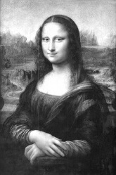

Lenardo da Vinci tarafından takriben 1505’te yapılan Mona Lisa tablosu, Rönesans kadın portresinin ilk örneği olarak görülmektedir. Bir kavak tablo üzerine yağlı boya çalışılan eser, 54 santimetreye 79 santimetre ölçülerindedir. Görece küçük boyutuna ve basit kompozisyonuna rağmen, dünyadaki en ünlü tablolardan biridir.

Mona Lisa’da resmedilen kadının kimliği gizli kalmıştır. 1550’de da Vinci’nin biyografisini yazan Giorgio Vasari’ye göre kadın, Floransalı tüccar Francesco del Giocondo’nun eşi olan Lisa di Antonio Maria Gherardini’dir (Mona, İtalyanca “hanımefendim” demek olan “ma donna”nın bir kısaltmasıdır). Ancak bu kimlik saptama problemlidir, çünkü da Vinci bu resmi herhangi bir hamiye vermemiş, 1519 yılında ölene kadar kendine saklamıştır. Yakın zamanda Bell Laboratuvarları’ndan Lillian Schwartz, da Vinci’nin kendine ait bir portresi olarak görülen bir çizimle Mona Lisa’nın dijital bir karşılaştırmasını yaptı. İki suret arasında bulduğu benzerliklere dayanarak Schwartz, resmin da Vinci’nin kendisinin kadın formunda bir portresi olduğunu iddia etti. Bu teorinin de savunulması zordur, çünkü sözde kendi portresine olan gönderme şüphelidir. En olası teori ise, Mona Lisa’nın bir portre değil, da Vinci’nin ideal kadın imajı olduğudur.
Temaya bakılmaksızın resim, da Vinci tarafından sfumatonun, yani gizemli bir ruh hali yaratan yumuşak, puslu ana hatların, harikulade kullanımını gösterir. Bu tekniği kullanan da Vinci, kadının ifadesini belirsiz kılmayı başarmıştır. Mona Lisa’nın gülümsemesinin kusursuz doğasına daha fazla mürekkep harcanmıştır; gerçekte onun hali, bakıldığı açıya bağlı olarak değişiyor görünmektedir.
Mona Lisa, da Vinci’nin ölümünden beri sancılı bir geçmişe sahiptir. I. Francis tarafından 4.000 altına satın alınmıştır. Louvre’daki koleksiyona dahil edilmeden önce, Napoleon Bonaparte’ın yatak odasında ve Versailles’da asılıydı. 1911’de Louvre’dan çalınıp iki yıl sonra Floransa’da bir otel odasında tekrar ortaya çıktı. 1956’da birisi Mona Lisa’nın alt yarısına asit püskürterek zarar verdikten sonra resim, koruyucu çift katlı bir camın ardına yerleştirildi.